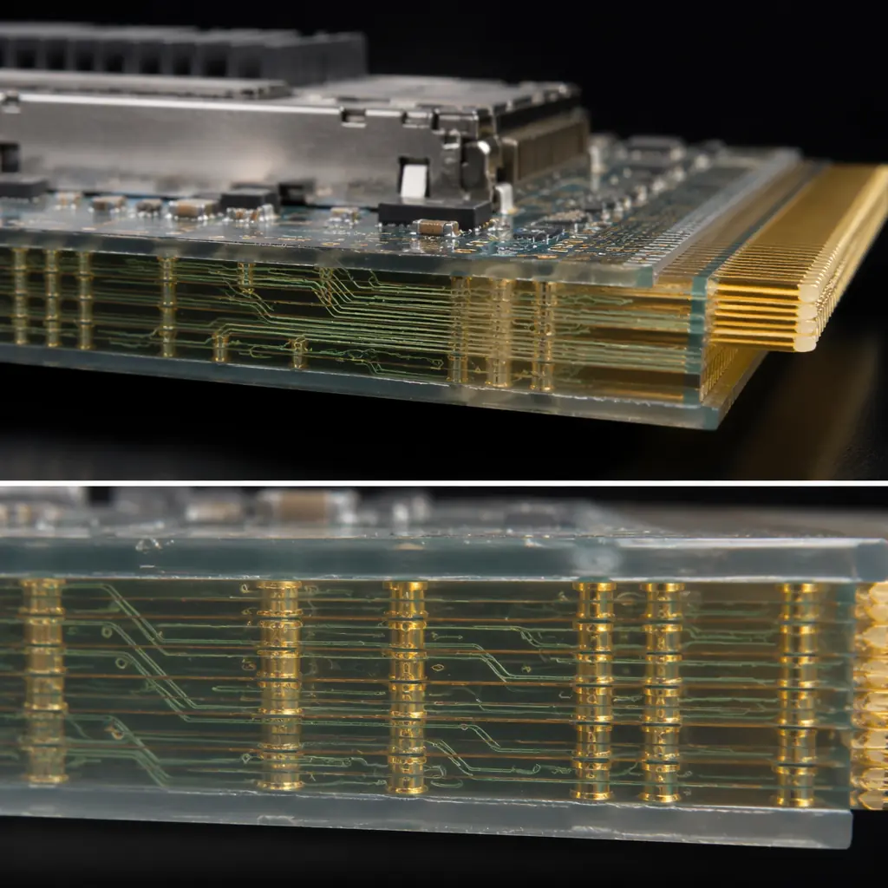
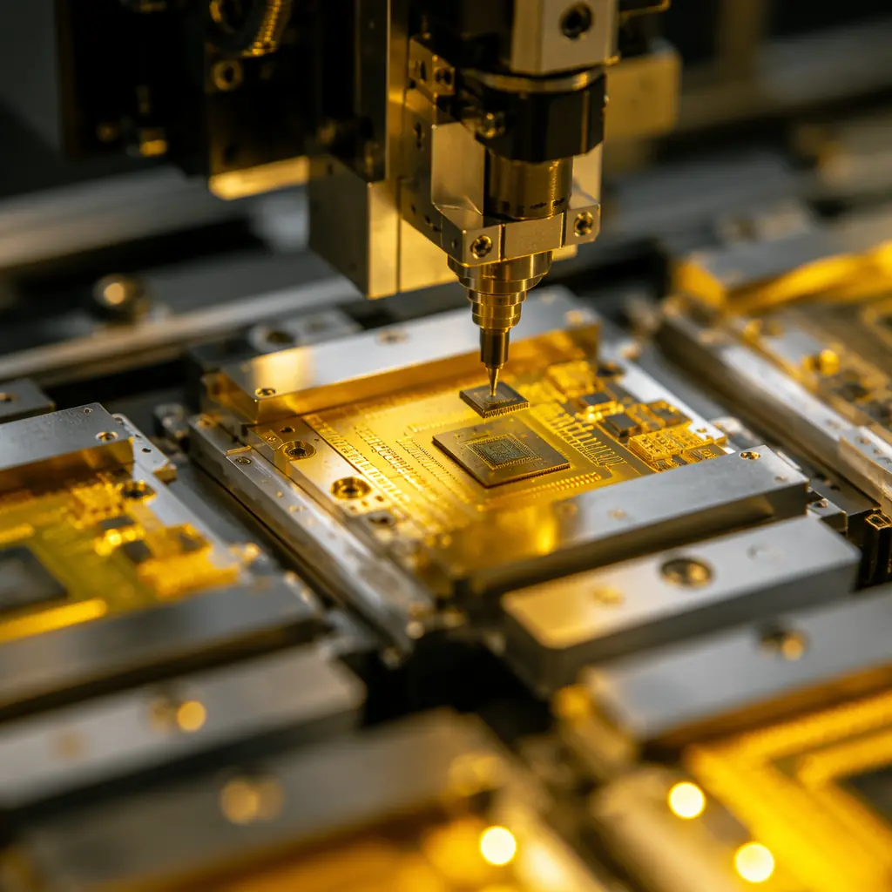

AI data centers are consuming optical transceiver modules at a pace the industry has never seen. A single NVIDIA GB300 NVL72 rack requires 72 optical transceivers for GPU-to-GPU interconnects alone — and hyperscale deployments are ordering these in lots of 100,000+ modules per quarter. Behind every QSFP-DD and OSFP module — whether it runs at 400G or the emerging 800G standard — sits a PCB substrate that carries high-speed electrical signals from the host ASIC to the optical engine, and from the optical engine to the connector interface. When that substrate underperforms, the entire optical link degrades: insertion loss climbs, crosstalk rises, and the bit error rate exceeds the FEC correction threshold.
This article is a practical technical guide to the PCB substrate inside optical transceiver modules — the materials, manufacturing tolerances, assembly challenges, and testing protocols that separate a production-ready optical module PCB from one that looks good on a stackup diagram but fails at 112 Gbps PAM4. Drawing on Huaxing PCBA's experience manufacturing high-speed substrates under ISO 9001 and UL certification, with 32-layer capability and ultra-low-loss material inventory, we cover what every optical module design team and NPI engineer needs to know before releasing a transceiver PCB to production.

The PCB Substrate — Optical Module's Hidden Performance Bottleneck
Optical module design teams spend most of their R&D budget on the optical engine: the silicon photonics chip, the EML or VCSEL laser, the lens array, and the fiber coupling. The PCB substrate gets far less attention — and that's exactly why it causes so many qualification failures. At 400G (8×56 Gbps PAM4 lanes per IEEE 802.3ck) and 800G (8×112 Gbps PAM4), the electrical channel between the host ASIC and the optical engine DSP imposes hard physical limits that no equalization can fully compensate.
The critical metric is insertion loss per unit length. At the 28 GHz Nyquist frequency for 56 Gbaud PAM4 (400G), the PCB substrate must deliver <0.3 dB/cm loss to keep total channel insertion loss within the transceiver's link budget — typically 12–15 dB end-to-end, including connector, vias, and package losses. At 800G (112 Gbps PAM4), the Nyquist frequency doubles to 56 GHz, and the loss budget tightens dramatically. The difference between a PCB substrate that meets spec and one that doesn't is measured in fractions of a decibel — which is why material selection and manufacturing precision are non-negotiable. For a deeper understanding of how signal degradation impacts PCB performance at these frequencies, see our complete guide to PCB signal integrity.
Beyond insertion loss, three additional substrate characteristics determine optical module PCB performance: (1) differential pair intra-pair skew — must stay below 1 ps per inch to avoid mode conversion that corrupts PAM4 eye diagrams; (2) via stub resonance — un-used via stubs create quarter-wave resonances that appear as deep notches in the insertion loss profile at frequencies that shift with the stub length; and (3) glass-weave skew — the difference in effective Dk between resin-rich and glass-rich regions of the laminate creates a periodic skew pattern that becomes significant when trace lengths cross multiple weave windows. These effects are often treated as second-order concerns in lower-speed designs. At 112 Gbps, they're first-order failure modes.
Key Takeaway: The optical engine and DSP silicon get the headlines, but the PCB substrate is where the electrical link either works or doesn't. At 112 Gbps PAM4, every 0.1 dB of excess insertion loss from the substrate reduces link margin by the same amount — and margin is what determines whether your module passes the IEEE 802.3ck compliance test or fails it. Substrate quality is not a cost variable; it's a design requirement.
Ultra-Low-Loss Materials for 800G Transceiver Substrates
Standard FR-4 — even high-Tg FR-4 with a Df of 0.015 — is completely unsuitable for optical module substrates at 400G and above. The material set for transceiver PCBs must deliver ultra-low loss (Df < 0.0015 at 10 GHz), tight Dk tolerance (±0.05 across the panel), and consistent performance through multiple thermal excursions during assembly. The table below compares the three primary material families currently used in production optical module substrates:
| Material | Dk @10GHz | Df @10GHz | Max Layer | Cost Index |
|---|---|---|---|---|
| Megtron 7 (Panasonic) | 3.35 ±0.05 | 0.0015 | 32+ | 3.5× FR-4 |
| Tachyon-100G (Isola) | 3.02 ±0.05 | 0.0014 | 30+ | 4.0× FR-4 |
| Astra MT77 (Isola) | 3.00 ±0.04 | 0.0017 | 28+ | 3.2× FR-4 |
| IT-88G (Doosan) | 3.30 ±0.05 | 0.0020 | 24+ | 2.8× FR-4 |
| ROGERS 4350B | 3.48 ±0.05 | 0.0037 | Hybrid only | 5.0× FR-4 |
Megtron 7 and Tachyon-100G are the workhorses for 400G and 800G optical module PCBs. Both use spread-glass reinforcement and low-profile copper foil (typically 2–3 μm Rz surface roughness) to minimize conductor-loss contribution at high frequencies. The Df < 0.0015 requirement at 112 Gbps PAM4 is not aspirational — it's the threshold where dielectric loss alone consumes more than 50% of the channel loss budget in a typical 4-inch transceiver trace. Above that, you're compensating with shorter traces, wider lines (which cost routing density), or more expensive materials.
Astra MT77 offers a slightly higher Df (0.0017) at a lower cost, making it viable for 400G module substrates where the loss budget is more forgiving. The choice between Megtron 7 and Tachyon-100G often comes down to stackup compatibility: Tachyon-100G's lower Dk (3.02) means wider traces for the same impedance target, which can become a routing challenge in the dense BGA breakout region under the DSP. Megtron 7's Dk of 3.35 yields narrower traces and better routing density at the cost of marginally higher dielectric loss. For a complete comparison of laminate families and when to specify each one, read our PCB laminate selection guide.
Material Lead-Time Warning: Ultra-low-loss laminates are not off-the-shelf commodities. Megtron 7 in 0.1 mm and 0.15 mm core thicknesses — the workhorse thicknesses for optical module stackups — typically carries a 4–6 week lead time from Panasonic distribution in Asia. Tachyon-100G is similar. Plan your substrate material procurement before you finalize the PCB layout, not after. Running out of laminate mid-build because the distributor allocated your order to a larger customer is a real and recurring NPI risk.
Precision Manufacturing for Optical Module PCBs
Designing the stackup and selecting the material is the easy part. Manufacturing the PCB to tolerances that preserve signal integrity at 56 GHz is where most suppliers fail. The five precision requirements below are non-negotiable for optical module PCBs — and they're what separates a manufacturer with high-speed substrate experience from one that only claims it on a capability matrix:
Impedance Tolerance: ±5% on Differential Pairs (Not ±10%)
Standard PCB impedance control tolerances of ±10% create a 20-ohm window on a 100-ohm differential pair — wide enough that reflections at the DSP-to-connector interface degrade return loss below the IEEE 802.3ck specification at 56 GHz. Optical module PCBs require ±5% impedance tolerance, which demands not just tight etching control but also laminate Dk uniformity across the panel (hence the ±0.05 Dk tolerance in the material spec above). A ±5% tolerance translates to trace width control within ±0.5 mil on a typical optical module stackup — a capability that requires laser direct imaging (LDI) and automated optical inspection (AOI) with impedance modeling feedback, not just a CAM file and a prayer.
Backdrill Stub Length: <6 mil Maximum
Every press-fit or through-hole connector pin on an optical module PCB leaves a via stub below the inner-layer connection. At 56 GHz, a 10 mil via stub creates a quarter-wave resonance that produces a 15–20 dB insertion loss notch — essentially a dead channel at that frequency. Backdrilling removes the unused portion of the via barrel, but the stub that remains must be controlled to <6 mil. Achieving this consistently across all connector and high-speed signal vias requires depth-controlled drilling with automated stub measurement on every board, not just a first-article coupon. For the engineering details behind backdrilling high-speed vias, see our PCB backdrilling guide.
Solder Mask Registration: ±1 mil on High-Speed Pads
Solder mask encroachment on high-speed signal pads changes the effective pad capacitance and creates an impedance discontinuity at every pad-to-trace transition. On a 100-ohm differential pair carrying 112 Gbps PAM4, a ±3 mil registration error (common for standard PCB manufacturing) is enough to push the impedance outside the ±5% window. Optical module PCBs require ±1 mil solder mask registration on all high-speed signal layers — achieved through LDI solder mask imaging with fiducial-based alignment rather than screen printing.
Gold Finger Plating: 30 μ" Hard Gold Over Nickel
The edge connector on an optical module PCB — whether QSFP-DD (76 positions) or OSFP (60 positions) — mates with the cage connector and must survive 50–100 insertion cycles without excessive wear or contact resistance degradation. The gold finger plating specification is 30 μ" minimum hard gold (alloyed with cobalt or nickel for hardness) over 100–150 μ" of nickel barrier. Soft gold (electroless nickel immersion gold / ENIG) on edge connectors wears through in <20 cycles — a field failure that manifests as intermittent link errors in the data center. For the full specification and the difference between hard and soft gold plating, see our hard gold vs. soft gold plating guide.
Board Warp & Twist: <0.5% After All Thermal Processes
An optical module PCB is typically 1.0–1.6 mm thick and 20–30 mm wide — a high aspect ratio that amplifies warp during reflow. Excessive warp causes coplanarity failures during SMT assembly (the BGA under the DSP doesn't solder flat), and in the field, it stresses the solder joints between the PCB and the optical engine during thermal cycling. The warp specification is <0.5% per IPC-TM-650 2.4.22, measured after simulated reflow — tighter than the standard 0.75% for rigid PCBs. Achieving this on ultra-low-loss laminates that have higher CTE than standard FR-4 requires careful stackup symmetry, controlled lamination press cycles, and post-lamination stress relief baking — process steps that many high-volume PCB fabs skip because they add cycle time without adding revenue.
The five precision requirements above form the minimum manufacturing specification for any optical module PCB. A supplier that can demonstrate capability data (Cpk values on impedance control, backdrill stub distribution histograms, solder mask registration measurements) for each of these parameters is serious about high-speed substrate manufacturing. A supplier that responds with "we can do that" and no data is gambling with your qualification timeline. For the stackup design methodology that ties these requirements together, read our PCB stackup design guide.
Assembly Challenges — Fine-Pitch BGA & Underfill
Once the bare PCB substrate is manufactured to specification, the assembly phase introduces its own set of challenges — and the DSP/retimer chip is the hardest component to assemble correctly. Modern optical module DSPs from vendors like Broadcom (Amber/Quartz ranch), Marvell (Alaska/Spica), and MaxLinear (Keem) ship in flip-chip BGA packages with ball pitches as fine as 0.4 mm and ball counts exceeding 600. These are not standard BGA assembly jobs — they demand process control at the limit of what mainstream SMT equipment can deliver.

The critical assembly parameters are: (1) solder paste printing — Type 5 or Type 6 solder paste with 75 μm or 65 μm particle size is required for 0.4 mm pitch stencil apertures; Type 4 paste will clog the apertures and produce insufficient solder volume. (2) Stencil thickness — 3 mil (75 μm) laser-cut stainless steel with nano-coating on the aperture walls to promote paste release; thinner stencils reduce paste volume below the minimum required for reliable BGA collapse. (3) Reflow profile — the ultra-low-loss laminate used in the substrate has a different thermal mass and CTE than the BGA package; a standard JEDEC profile that works for FR-4 boards will produce peak temperatures at the BGA-substrate interface that are 5–10°C lower than the BGA ball temperature, risking cold joints on inner rows.
Underfill is mandatory — not optional — for optical module DSP BGAs. The combination of a small BGA footprint (15×15 mm or less), a thin PCB substrate (1.0–1.6 mm), and the thermal cycling environment inside a data center rack (module case temperatures swing from 25°C to 85°C depending on traffic load and cooling) creates thermomechanical stress that standard BGA solder joints cannot survive without underfill reinforcement. The underfill material must be: low-viscosity for capillary flow under the 0.4 mm pitch BGA (<5 Pa·s at dispensing temperature), fast-cure (full cure within 5–10 minutes at 150°C), and matched CTE (within 20–30 ppm/°C to avoid adding stress rather than relieving it). For the complete assembly workflow including BGA placement and inspection, see our BGA assembly guide.
Process Warning: Underfill that flows onto the gold finger connector pads during dispensing is a field reliability hazard — the underfill material insulates the contact surface and causes intermittent opens when the module is inserted into the cage. Mask the gold fingers with Kapton tape or a precision dispensing fixture during underfill application, and inspect every module under UV light post-cure. This step takes 15 seconds per module. Skipping it because the underfill supplier claims "self-confining" properties has caused at least three field-recall events that we're aware of in the optical module industry.
Testing & Qualification for Optical Module PCBs
Standard PCB electrical test — continuity and isolation at DC — tells you almost nothing about whether a substrate will work at 56 GHz. Optical module PCBs require a tiered test strategy that validates the high-frequency electrical performance the design depends on:
Vector Network Analyzer (VNA) Testing to 50 GHz
A 2-port or 4-port VNA test measures S-parameters on representative differential pairs — typically on a dedicated test coupon built into the same panel as the production boards. The test captures insertion loss (Sdd21), return loss (Sdd11), and near-end crosstalk (Sdd31) from 100 MHz to 50 GHz. The pass/fail criteria are derived from the channel compliance specification (IEEE 802.3ck for 400G/800G, or the OIF-CEI-112G-VSR specification for chip-to-module interfaces). Critically, the VNA test must be performed with the same launch and via structure as the production board — testing a straight microstrip trace on a bare coupon and extrapolating to the routed channel including vias and connector launches will produce optimistic results that the real board cannot replicate.
Time-Domain Reflectometry (TDR) for Impedance Profiling
TDR provides a spatial impedance profile along the signal path, identifying exactly where impedance discontinuities occur: at the via transition, at the BGA pad, at the connector launch, or within the trace itself due to glass-weave effects. A TDR system with <5 ps rise time can resolve discontinuities as short as 1 mm — sufficient to identify the specific via or pad transition causing a return-loss failure. For a detailed breakdown of impedance testing methodology, see our impedance control guide.
Interconnect Stress Testing (IST)
IST is the industry-standard method for validating plated-through-hole (PTH) reliability under thermal cycling — and optical module PCBs have PTHs at every connector pin and mounting hole. The IST coupon is cycled from ambient to 150°C (or higher for lead-free assembly simulation) while monitoring resistance change in the PTH daisy chain. The acceptance criterion is typically <10% resistance increase after 6 cycles of preconditioning plus thermal stress — a standard derived from IPC-TM-650 2.6.26. IST failures in optical module PCBs most commonly originate from poor copper plating adhesion at the resin-rich regions of ultra-low-loss laminates, which have different surface chemistry than FR-4 and require adjusted desmear and electroless copper processes.
CAF (Conductive Anodic Filament) Resistance Testing
CAF failures — where copper ions migrate along the glass-resin interface under bias voltage and humidity — are accelerated in ultra-low-loss laminates because the lower resin content (to achieve lower Dk) means shorter filament growth paths between adjacent vias. Optical module PCBs operating in data center environments with 50–85% relative humidity must pass 1,000-hour CAF testing at 85°C/85% RH with 100V DC bias, per IPC-TM-650 2.6.25. This is a qualification test, not a production test — it's run once per stackup/material combination and is part of the supplier's process qualification evidence package, not a lot-by-lot requirement.
Manufacturing with Huaxing PCBA
The optical module PCB supply chain is concentrated among a small number of manufacturers who have invested in the equipment, materials, and process expertise to deliver substrates that perform at 56 GHz and above. Huaxing PCBA is one of those manufacturers — operating 8 SMT lines across 80,000㎡ of certified production floor in Shenzhen, with dedicated high-speed substrate manufacturing cells that include laser direct imaging, depth-controlled backdrilling, and VNA test capability to 50 GHz.
We stock ultra-low-loss materials — Megtron 7, Tachyon-100G, and Astra MT77 — in the core thicknesses most common in optical module stackups, eliminating the 4–6 week material lead time that delays new designs at other fabs. Our 32-layer PCB capability handles complex hybrid stackups with multiple high-speed signal layers and dedicated power/ground planes. Every optical module PCB we produce passes: impedance control verification with Cpk data per lot, backdrill stub measurement (X-ray or cross-section) on first-article and production samples, gold finger thickness verification via XRF, and IST qualification per IPC-TM-650 2.6.26 for the specific laminate and stackup combination.
Our assembly team is experienced with the fine-pitch BGA and underfill processes that optical module DSPs demand — we run Type 5 solder paste on 3 mil nano-coated stencils as standard for 0.4 mm pitch BGAs, and our underfill dispensing cells include automated fillet inspection and UV-cure verification. ISO 9001 and UL certification, combined with export experience to 30+ countries, means your optical module PCBs are manufactured to the same quality system whether they ship to a hyperscale data center in Virginia or a co-location facility in Singapore.
Whether you're bringing up a 400G QSFP-DD design that needs 50 prototype substrates for NPI qualification, or scaling an 800G OSFP module to 10,000+ units per month, our process is designed for the transition from NPI to volume without requalification. Send us your stackup and Gerber files, and our engineering team will return a detailed DFM review — including impedance modeling validation against your target specification — within 24 hours.